VoxelWorld
VoxelWorld는 대규모 복셀 월드를 실시간으로 탐색 가능한 상태로 만드는 것을 목표로 한 DirectX 11 기반 개인 프로젝트입니다.
 VoxelWorld 시연 영상
YouTube에서 열기
영상 보기
VoxelWorld 시연 영상
YouTube에서 열기
영상 보기
주요 문제를 해결한 과정입니다.
1. 동적 로딩 구조를 이용해 월드를 구현
블록과 상호작용 해야하므로, 월드를 메모리 공간에 올릴 필요가 있었습니다.
16384 x 256 x 16384의 월드의 경우 2의 32승으로 4GB가 되는 용량을 차지하므로 한 번에 메모리를 상주시키는 것은 좋은 선택이 아니었습니다.
월드를 16x16x16 단위의 청크로 관리하였고, 플레이어 주변만 동적으로 업데이트 해주었습니다.
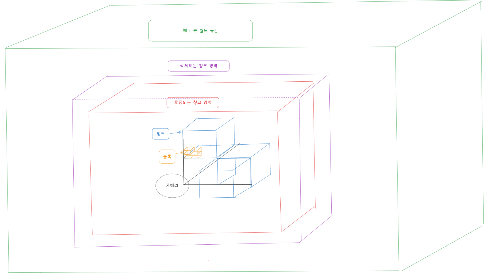
청크 경계를 오고가며 잦은 로딩 및 삭제를 방지하기 위해 삭제되는 영역을 조금 더 크도록 보장했습니다.
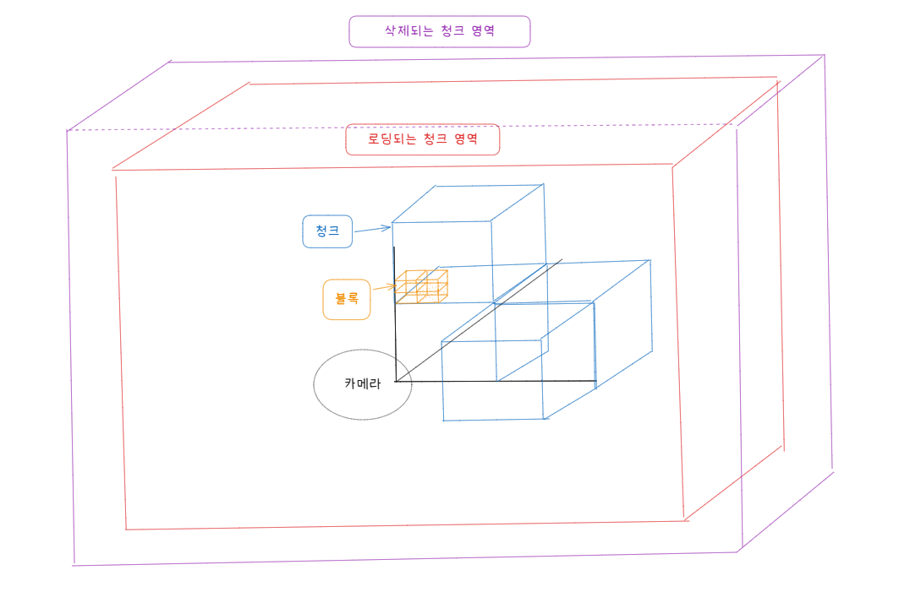
결과적으로 전체 월드 크기와 별개로 메모리 사용량을 일정 범위에서 제어할 수 있도록 만들었습니다.
2. 더 넓은 지형을 한 화면에 보여주기
시야 거리가 늘어나야 했습니다. 거리가 2배씩 증가할수록 로딩되는 청크 영역이 8배로 늘어났고, 성능 저하로 이어졌습니다.
아래의 사진처럼 측정하여 GPU 바운드로 판별했고, GPU의 일감을 줄일 수 있는 최적화 방법이 필요하다 생각했습니다.
VisualStudio 프로파일러로 보았을 때, CPU는 자주 대기중인 것을 확인했습니다.
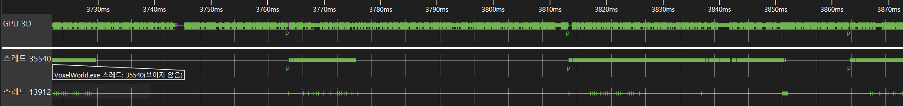
Nsight Graphics로 측정 결과
GPU Frame Time은 60~90ms, DrawCall은 1200~1500개내로 유지하고 있었습니다.
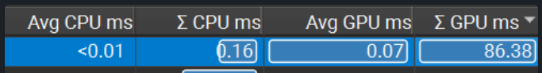
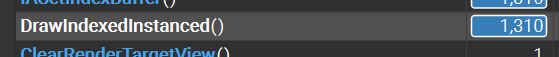
D3D11 Query로 측정해보았을 때, 정점 1억개 가량을 제출하고 있었습니다. (시야 거리 80 기준)
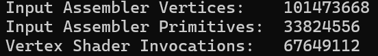
카메라 시야 밖은 GPU에 제출하지 않는 Frustum Culling 구현
현재 로딩된 청크를 모두 제출하고 있습니다.
카메라 시야에 닿는 것만 제출하면 유의미한 효과가 있을 거라 생각했습니다.
구현 코드
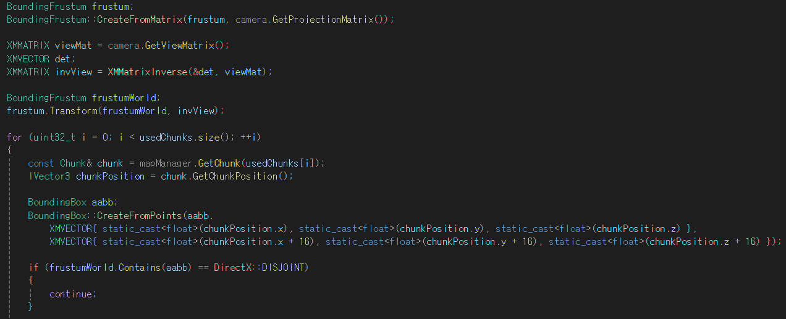
DrawCall이 40~90% 감소했고, 정점 수는 10~90%까지 감소했습니다.
35~50 FPS에서 40~120FPS로 증가했습니다.
한계: 카메라가 아래를 바라볼 때는 블록으로 꽉찬 청크가 많아지는데, 근본적으로 정점 수를 줄여야 했습니다.
인접한 면을 제거
블록 하나당 정점을 36개씩 제출하고 있습니다.
꽉찬 청크의 경우 4096개의 블록을 갖고 있으며, 4096 * 36 = 147,456개의 정점을 갖게 됩니다.
그러나 아래의 사진처럼 보이지 않는 인접한 면들을 제거하게 될 경우, 3(정점 수) * 32(가로 삼각형 개수) * 16(높이) * 6(면 개수) = 9,216개로 줄어듭니다. (1/16)
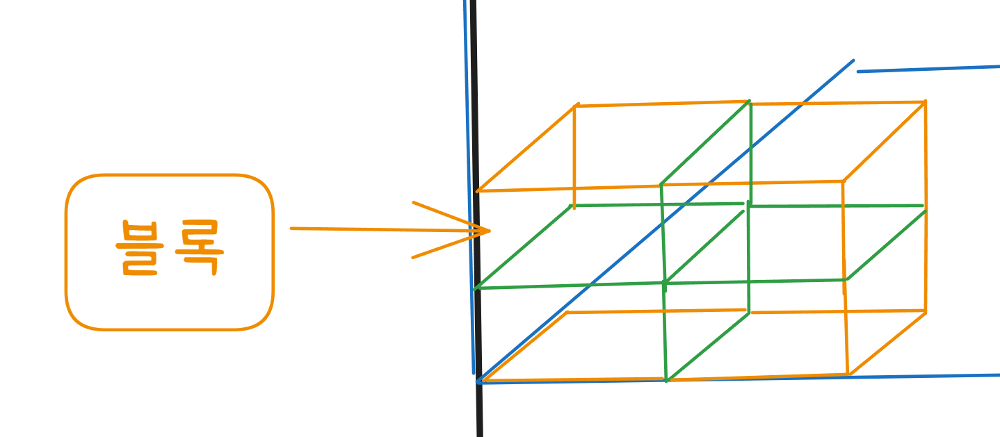
최고 정점 개수가 1200만 이내로 줄어들게 되었으며, 시야 거리 80에서 FPS를 120으로 유지하게 되었습니다. (시야 거리 80 기준)
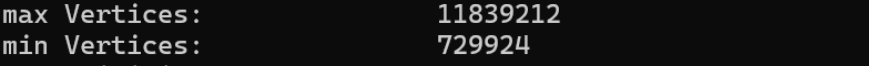
사이즈 버퍼 풀 구현
청크 메시를 Vertex, Index 버퍼에 업데이트 해야 됩니다. 청크와 마찬가지로 풀에 담아 재사용을 하는 것이 성능 저하가 없을 것입니다. 이 때, 고려할 점이 있습니다.
아래의 그림처럼 격자로 블록이 채워진 청크가 있다고 가정해보겠습니다.
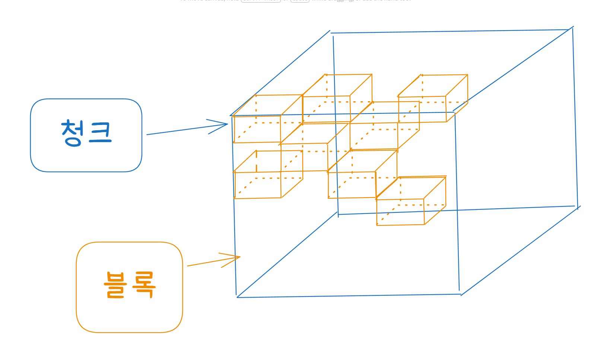
인접면 제거 전, 꽉찬 청크가 147,456개의 정점을 가진다면, 격자 청크는 1/2 정도의 정점을 가지게 될 것입니다. 거의 존재하지 않는 최악을 가정해서 모든 버퍼를 크게 잡는다면, 매우 큰 리소스 낭비가 됩니다.
이를 보완하기 위해, 사이즈 마다 버퍼 풀을 제작했습니다. 사이즈를 7단계로 나눴고, 메시를 업데이트 할 때 해당 청크에 알맞는 사이즈 버퍼를 배정받도록 구현했습니다.
적절하게 메모리를 사용하면서, 최악의 상황도 보장할 수 있게 되었습니다.
3. 쾌적한 플레이를 위해 프레임 드랍을 프로파일링하여 해결했습니다.
시야 거리를 160으로 늘린 이후, 카메라를 회전 할 때 프레임 드랍이 종종 발생했었습니다.
Nsight Systems로 프로파일링한 결과
아래와 같이 CPU에서 메시를 생성하는 비용이 대부분을 차지하고 있었습니다.
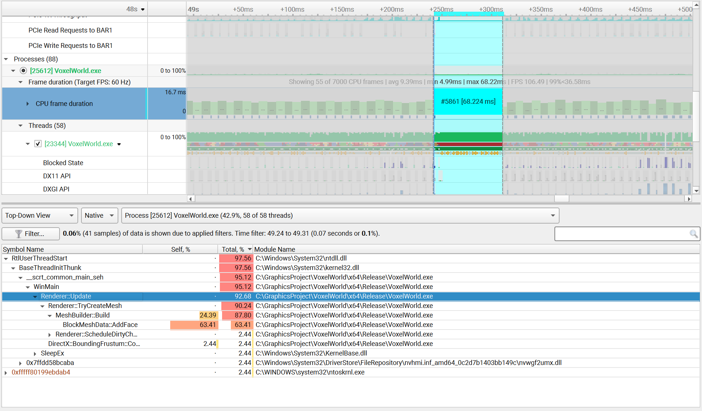
새 시야가 들어오는 순간 많은 메시를 생성하는 것이 프레임 드랍의 원인이었습니다.
속도를 빠르게 하는 방법도 있겠지만, 작업을 프레임마다 분배하는 것이 프레임 안정화에 큰 도움이 될 것이라 판단했습니다.
구현, 시퀀스 다이어그램 및 의사 코드 (실제 코드 : 깃허브링크)
데모 영상과 같이 프레임 드랍이 발생하지 않게 되었습니다.
Software Raytracer
C, CPU만으로 레이트레이싱을 구현해보았습니다.
 Software Raytracer 시연 영상
YouTube에서 열기
영상 보기
Software Raytracer 시연 영상
YouTube에서 열기
영상 보기
주요 문제를 해결한 과정입니다.
1. C에서 함수 포인터를 이용해 도형을 추가하기 쉬운 구조로 제작했습니다.
도형을 추가할 때마다 여러 곳에서 조건문을 추가해야 했습니다. 이는 불편하며, 실수하기 쉬웠습니다.
OOP의 다형성처럼 구현하고 싶었고, 상속 메모리 구조와 vtable이 있는 것을 참고했습니다.
도형이 추가될 때마다 여러 곳에서 조건문을 수정해야 했습니다.
이전 의사 코드
// Intersect
for (shape : shapes) {
switch (shape.type) {
case SPHERE: hit = intersectSphere(ray, shape); break;
case PLANE: hit = intersectPlane(ray, shape); break;
// ...
}
}
// transform
for (shape : selected) {
switch (shape.type) {
case SPHERE: moveSphere(shape, delta); break;
case PLANE: movePlane(shape, delta); break;
// ...
}
}이후 코드
부모 구조체를 일반화합니다.
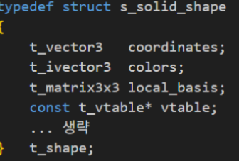
추가된 도형의 vtable을 구현합니다.
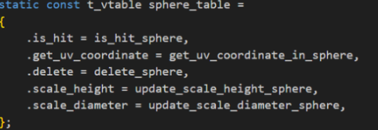
자식 구조체의 첫번째 멤버를 부모 구조체로 선언하고, vtable과 함께 초기화를 시켜줍니다.
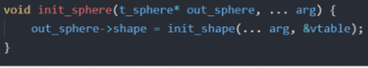
실행부에서 vtable을 이용해 호출해줍니다.
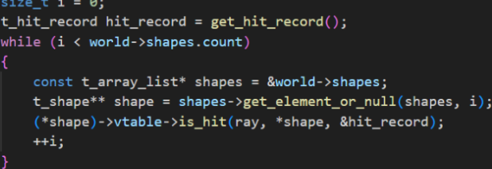
요약: 부모 구조체를 일반화하고 vtable 기반으로 동적 바인딩해, 도형 추가 시 실행부 수정 없이 확장 가능하도록 구조를 개선했습니다.
2. 프레임 타임이 0.42초 정도 소요되었으나 개선을 통해 0.02초로 감소했습니다.
함수 인라인을 통해 0.42초에서 0.1초로 감소시켰습니다.
gprof로 측정한 결과, 함수 호출 횟수가 매우 많았고 그에 따른 오버헤드라 생각했습니다.
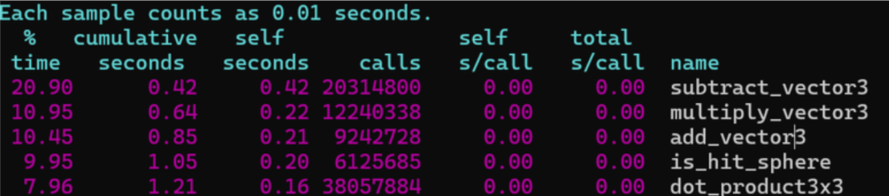
아래와 같이 상위 호출 함수를 인라인화 해주었습니다.
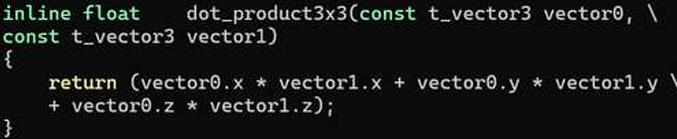
멀티쓰레딩을 통해 픽셀을 병렬적으로 처리하여 0.1초에서 0.02초까지 감소했습니다.
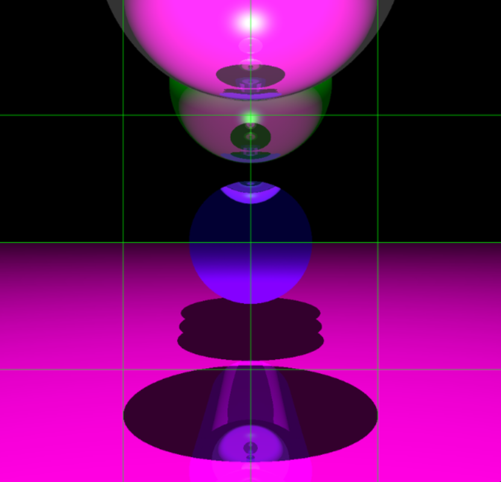
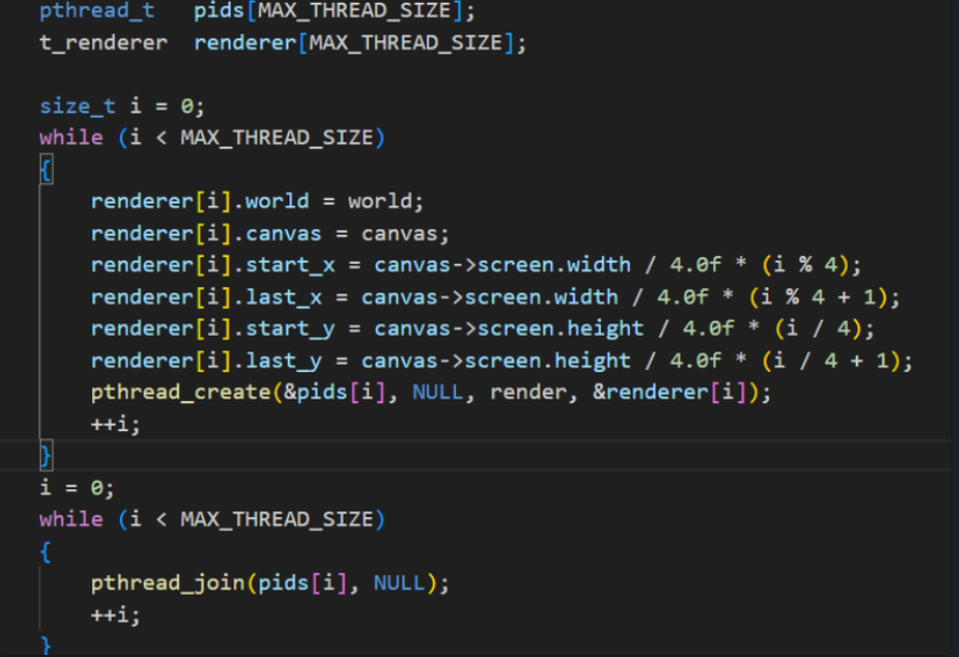
IRC(Internet Relay Chat) Server
IRSSI라는 채팅 클라이언트 프로그램을 호환하기 위한 IRC Server입니다.
 IRC Server 시연 영상
YouTube에서 열기
영상 보기
IRC Server 시연 영상
YouTube에서 열기
영상 보기
주요 문제를 해결한 과정입니다.
클라이언트 프로그램 실행 방식에 맞춰, 사용자가 어느 영역(로그인 단계, 로비, 채널)에 속하냐에 따라 사용가능한 명령어를 다르게 해주었습니다.
먼저 서버를 아래와 같은 그림처럼 모델링을 했습니다.
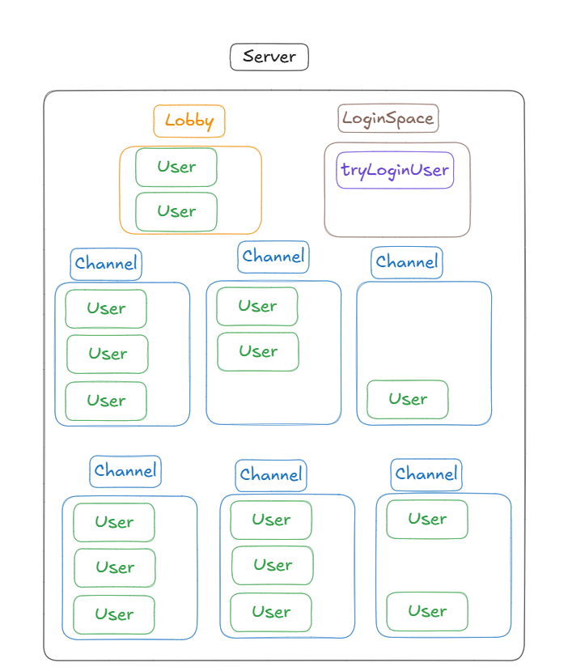
이후 명령어를 실행하는 흐름입니다.
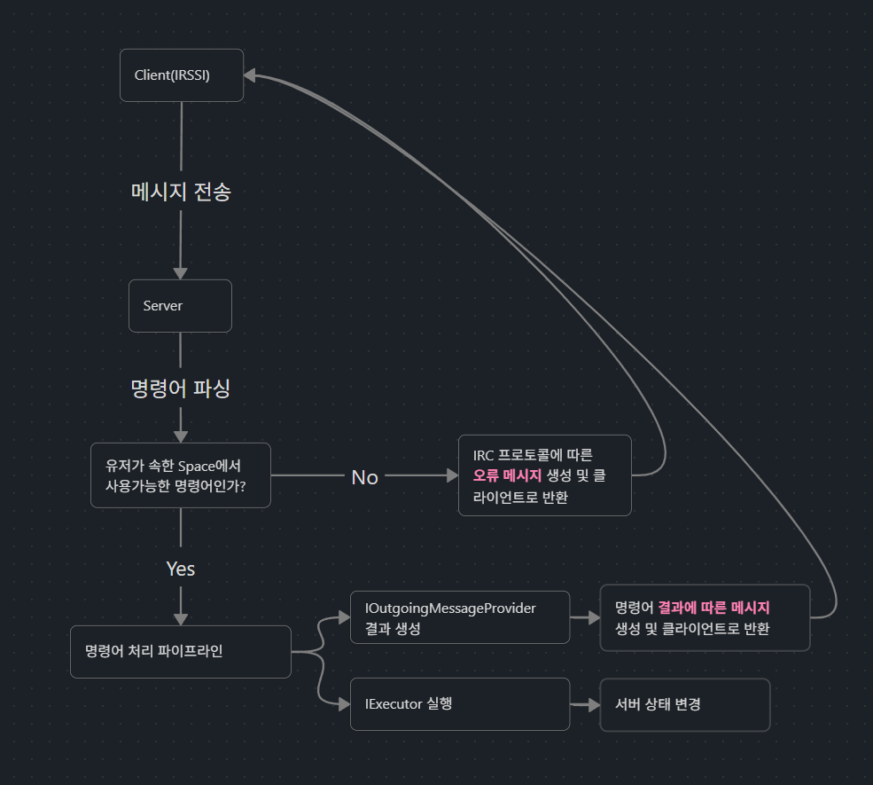
소스코드 깃허브 퍼머링크
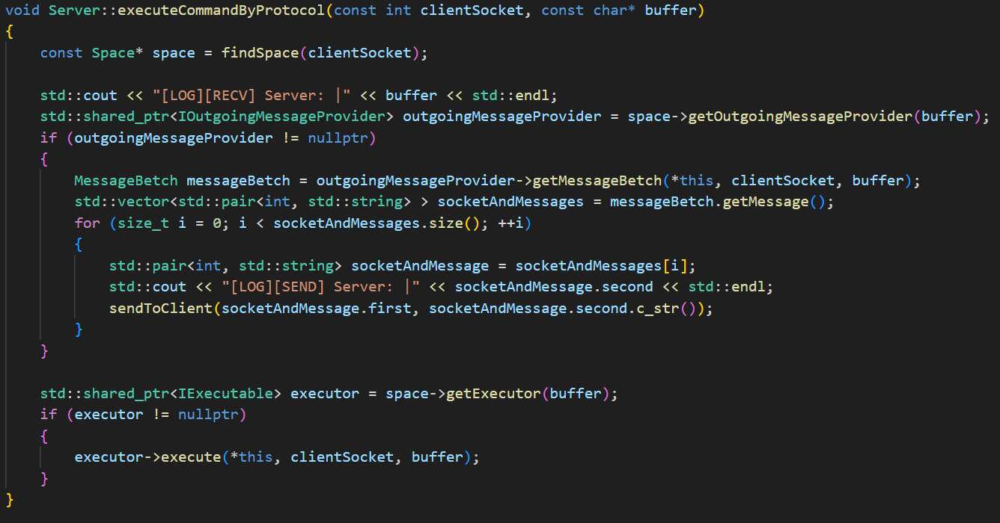
명령어 추가에 따라 여러 곳의 조건문을 수정해야 했습니다.
Before
변경 전 의사코드
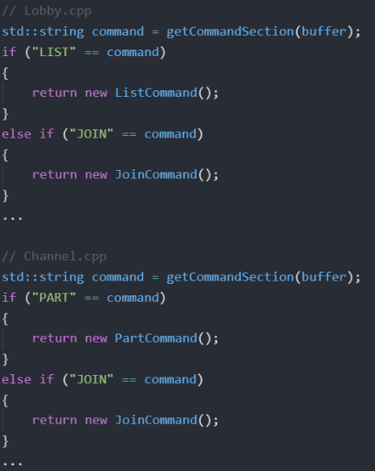
After
map을 활용하여 명령어 추가가 쉽도록 구현했습니다.
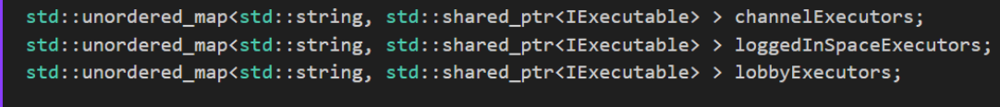
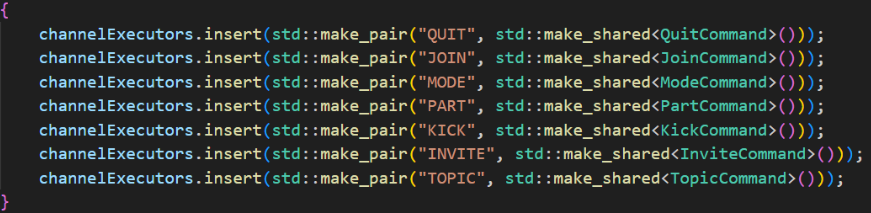
실행부는 명령어가 추가되어도 변경되지 않습니다.
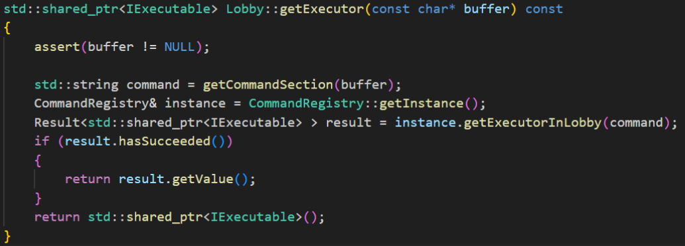